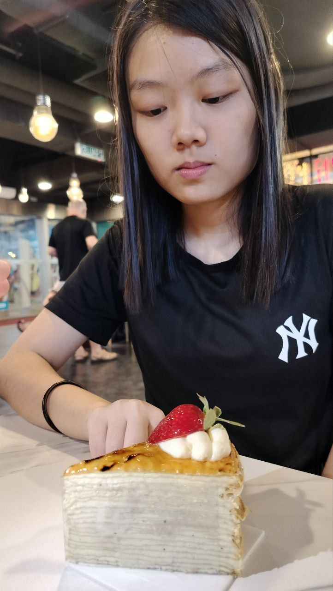
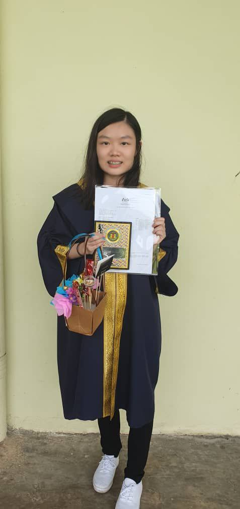

February 1, 2005
About Me
- 🏠 I live in Johor, Kulai
- 🍼 I was born on 1 February 2005
- 🪽 My MBTI is ISFJ, which means I have a Defender personality type (Introverted, Observant, Feeling, and Judging)
- 👨👨👧👧 My family has four members, and we all live together

Hobbies and Preferences
- 🏸 I'm not a big fan of sports, but I occasionally play badminton with my friends
- 🔍 I love watching detective shows because they are both entertaining and educational
- 🎤 I enjoy singing, though I’m not very good at it
- 🛒 Shopping is one of my favorite ways to relax and enjoy myself
- 🤩 I became a K-pop fan last year, and my biases are Zerobaseone and Seventeen
- 🍴 I enjoy eating different types of food because it’s fun to try new flavors and discover different cuisines
- ❌ I’m not a fan of coriander, celery, green onions, green garlic, or bitter melon

Education
-
Primary School: SJK(C) Kulai 1
- Started serving as a prefect from Grade 4
- Served as the secretary of the Chinese Language Society
- Achievement: UPSR - 6A, 2B
-
Secondary School: SMK Bandar Putra
- Treasurer of the Tourism and Outdoor Education Club
- Assistant Treasurer of the Fire and Rescue Cadet Corps
- Deputy Editor of the Chinese Language Society magazine
- Vice Class Representative
- Achievement: SPM - 4A+, 4A, 2A-
-
University: Universiti Teknologi Malaysia (UTM)
- Mid-Autumn Festival committee member
- College event crew member
- Foundation: CGPA 3.97
- Degree: Currently pursuing
- MUET Score: 3.5
